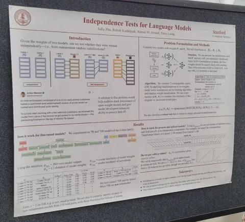
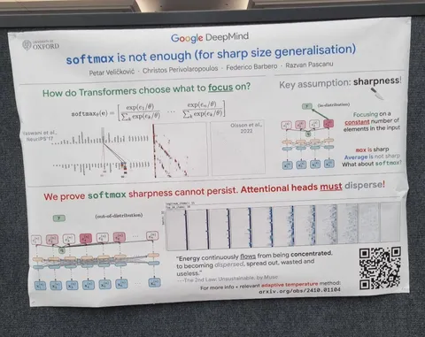
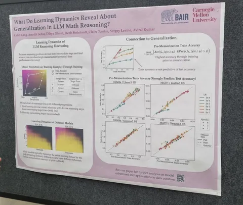
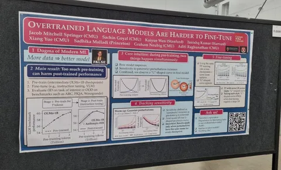

Independence Tests for Language Models
Авторы задаются вопросом, как проверить, являются ли две модели независимыми, или одна из них — это файнтюн другой? А может быть, у них общий предок? Чтобы узнать это, вводят специальный тест, основанный на перестановках весов. Предположим, что две модели имеют одинаковые архитектуры и размер. Тогда можно сгенерировать много перестановок весов для одной модели и считать статистики между этими перестановками и весами второй, а на основе этого вывести p-value.
Подход работает, если алгоритм обучения эквивариантен к перестановкам (сначала обучить, а потом переставить, или наоборот — в любом случае, получим один и тот же порядок весов), а перестановки при этом не меняют распределение весов на этапе инициализации модели. Для моделей с разными архитектурами можно делать сравнение слоёв с одинаковыми размерами. При этом надо учесть, что порядок нейронов может быть другим. Авторы убедились, что метод работает на моделях c Hugging Face из семейства Llama и её тюнов — посчитали, какие слои Llama-3.1 8B обрезали, чтобы получить Llama-3.2 3B.
Softmax is not Enough (for Sharp Size Generalisation)
Простое и понятное исследование с практическими рекомендациями. В аттеншне используется софтмакс, от которого мы, как правило, ждём разреженности и фокуса на небольшом количестве токенов. На практике так не получается — особенно с ростом длины последовательности. Софтмакс неизбежно размазывается по всей последовательности. Оно и понятно: числитель в софтмаксе остается неизменным, а знаменатель растёт с длинной последовательности. Что делать: авторы предлагают адаптивно подстраивать температуру так, чтобы энтропия оставалась постоянной.
What Do Learning Dynamics Reveal About Generalization in LLM Reasoning?
При обучении на задачах с решением и ответом можно смотреть на две метрики: перплексия правильного решения и точность финального ответа. Точность оценивается с помощью генерации нескольких решений, по которым считается средняя accuracy ответа. На разных примерах модель может вести себя по-разному: на каких-то в начале или середине обучения показывает высокую точность, но и высокую перплексию решения. Это хорошие примеры — модель ещё не запомнила ground truth-решение, но при генерациях приходит к правильному ответу. А бывают сложные примеры, в которых в течение обучения точность низкая, и растёт только тогда, когда перплексия ground truth-решения становится достаточно маленькой. То есть модель ничего не может выучить из этого примера, а лишь запоминает его. В статье предлагается метрика — точность до запоминания, — которая позволяет такие примеры разделять. На основе этого можно генерировать примеры, похожие на сложные, и повышать точность модели.
Overtrained Language Models Are Harder to Fine-Tune
Авторы делают следующее наблюдение: чем дольше мы претрейним модель, тем сложнее её потом файнтюнить. Как проверяют: берут чекпоинты открытых моделей с разных точек обучения, и измеряют точность на бенчмарках после претрейна и после файнтюна этого чекпоинта.
Оказывается, что в какой-то момент метрики после файнтюна начинают ухудшаться. Почему так происходит? Модель становится более чувствительной к изменениям весов. Авторы попробовали добавлять гауссовский шум к весам с разной дисперсией на разной длине обучения, и смотрели, как изменяется перплексия. Чем дольше учится модель, тем больше разница между перплексиями до и после добавления шума. То же самое происходит и при файнтюне.
Во всех результатах lr сводится к нулю. В первый день конференции была статья, в которой утверждалось, что если не сводить, то результаты на дообучении (файнтюне) будут лучше. Приятно, что независимые наблюдения сходятся.
Интересным поделился
#YaICML25
Душный NLP
